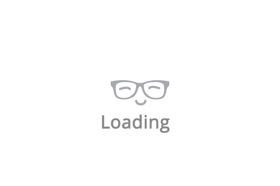

<div class="content-wrapper">
    <!-- Main content -->
    <div class="container-fluid content-container">
      <!-- Center result + option filters -->
      <!-- Left content: Who to follow, trends -->
      <div class="result-container col-md-3" style="margin-top:4%;">
        <div class="home-user-info">
            <div class="blue-background-placeholder">
                
            </div>
            <div class="home-user-info-content">
                <div class="top-content">
                    
                    <div class="name-and-screen-name">
                        <span class="home-user-name">{{root.twitterSession.name}}</span><br>
                        <span class="home-user-screen-name">@{{root.twitterSession.screen_name}}</span>
                    </div>
                </div>
                <div class="bottom-content">
                    <div class="user-no-tweets">
                        <a href="">Tweets<br><span>135</span></a>
                    </div>
                    <div class="user-no-followings">
                        <a href="">followings<br><span>135</span></a>
                    </div>
                    <div class="user-no-followers">
                        <a href="">followers<br><span>135</span></a>
                    </div>
                </div>
            </div>
        </div>
    

        <!-- 
            {{root.twitterSession.first_name}}
            {{root.twitterSession.location}}
            {{root.twitterSession.description}}
         -->
    </div>
    <div class="result-container col-md-6">
        <div class="row cms-view">
        <div class="col-md-12" ng-if="!root.twitterFriends">
            
        </div>
        <div class="col-md-12" ng-if="root.twitterSession">
                <div class="main-result-container">
                    <div class="box-body chat" id="chat-box" style="width: auto;">
                        <div ng-repeat="status in root.twitterFriends.data | limitTo: 20">
                            <div class="item">
                                
                                <p class="message">
                                {{status.status.text}}
                                </p>
                                <small class="pull-left">{{status.screen_name}}</small>
                                <hr>
                        </div>
                    </div> 
                </div>
            </div>
        </div>
    </div>

    <!-- Right content: Other statistics -->
    <div class="result-container col-md-3">

    </div>
</div>
